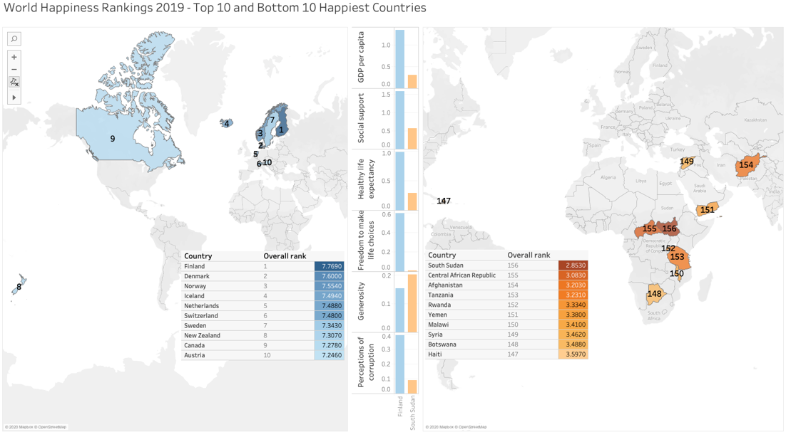
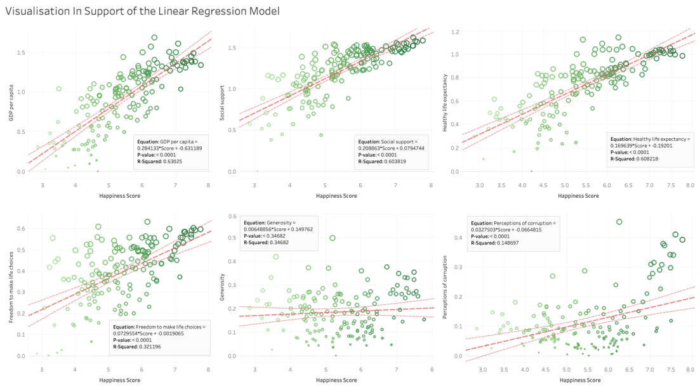

World Happiness Analysis
Exploring a dataset relating to World Happiness rankings in 2019
In this project, I have used Tableau to explore and visualise insights into the ranked happiest and unhappiest countries in the world in 2019.
This project was part of my Master's Degree coursework.
Data Source
World Happiness Rankings 2019 - Top 10 and Bottom 10 Happiest Countries

Visualisation in Support of the Linear Regression Model
